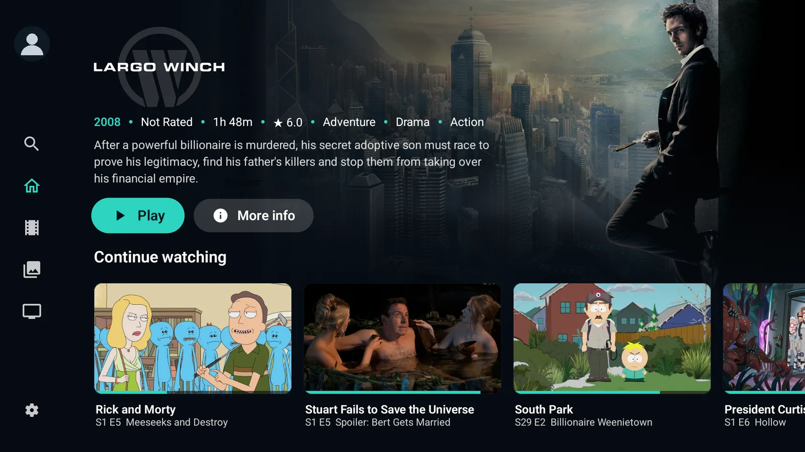
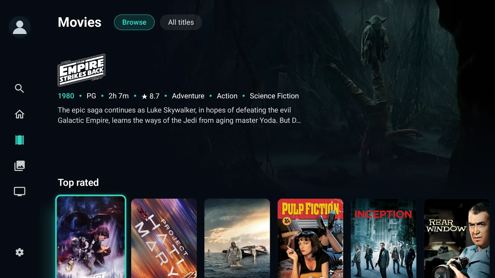
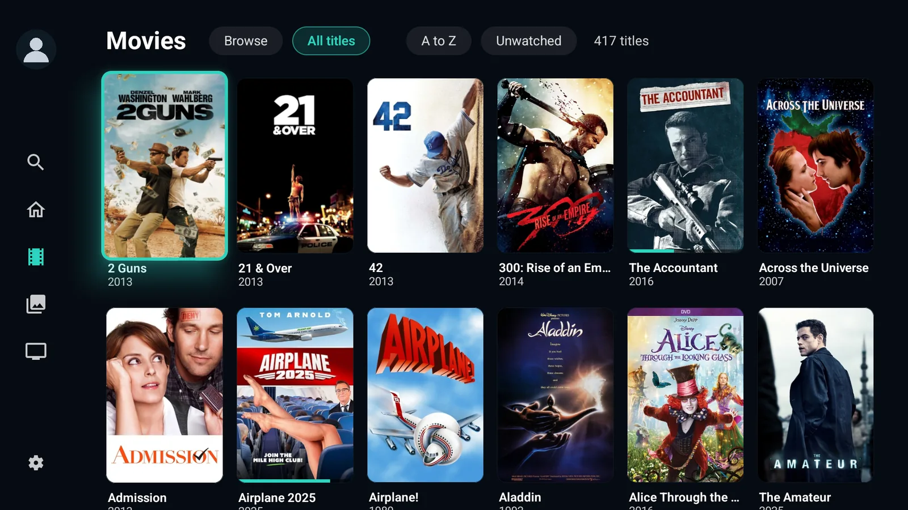
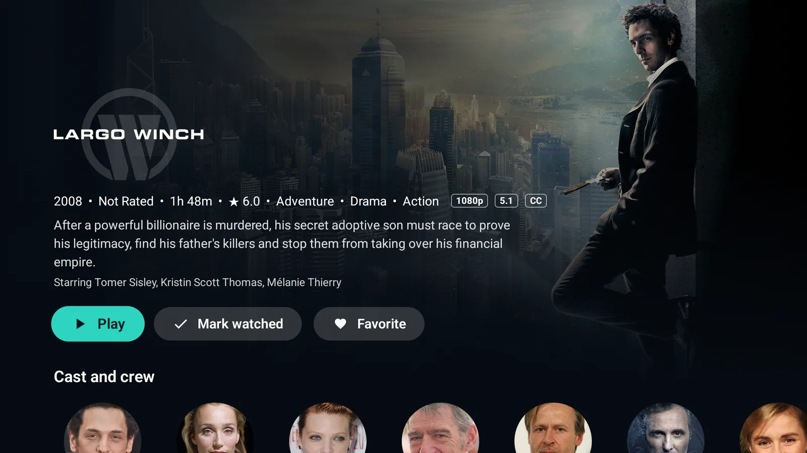
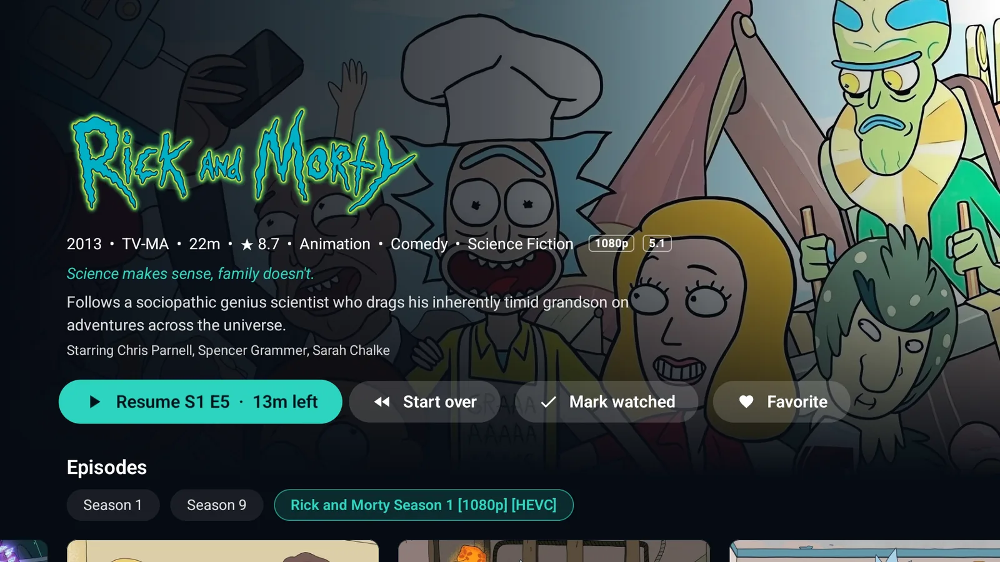
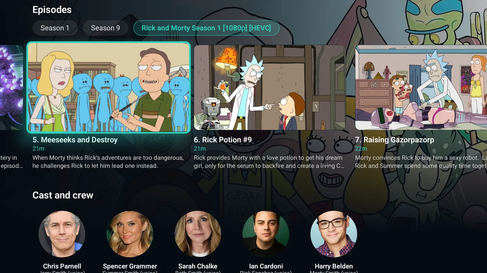
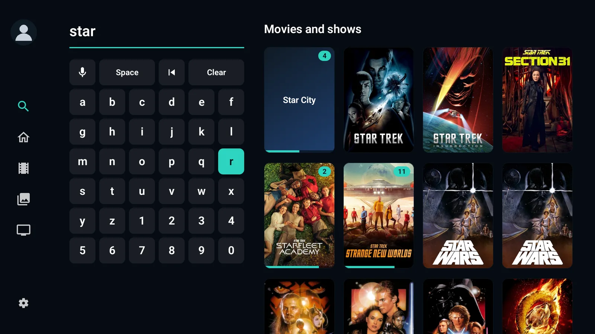
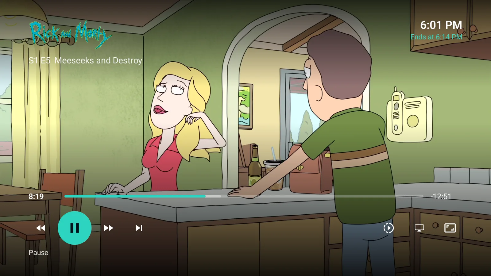
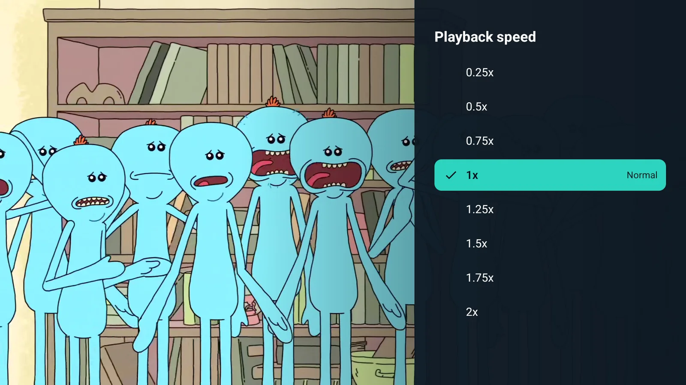
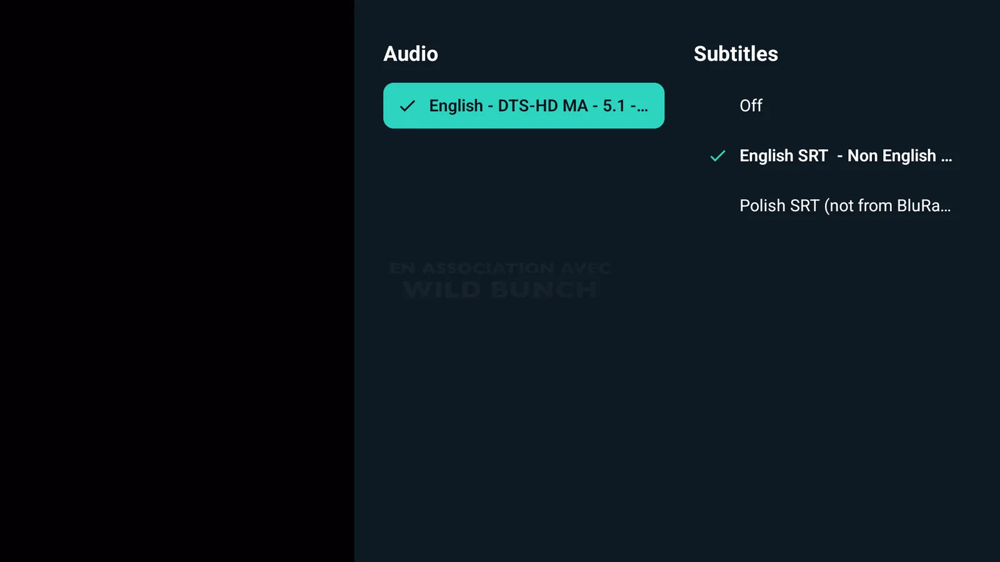

Lagoon is a free, open source TV app for your own Jellyfin server. It brings a streaming-style home screen, rich details pages, quick search and simple player controls to the shows and movies you already own.
Free and open source under the GPL-2.0. Needs a Jellyfin server. Android TV 6.0 or newer.

Lagoon replaces the screens you use every day with a design built for a TV remote, while the proven Jellyfin engine underneath keeps streaming, transcoding and watch progress working the way they always have.
A rotating billboard with big artwork and logos, then Continue watching, Next up and new arrivals in rows that keep your place.
Browse by top rated and by genre, or switch to a clean poster wall of every title with sorting and an unwatched filter.
Synopsis, cast, 4K, HDR and surround badges, seasons and episodes, and one Play button that knows whether to resume.
A remote-friendly keyboard and voice search, with the title you meant at the top and episodes right below it.
Scrub with left and right, see when the episode ends, and switch audio, subtitles, speed or quality from tidy side panels.
Lagoon talks only to your own Jellyfin server. No account, no tracking, no ads, and the source is open for anyone to read.
Real screenshots from a Google TV, driven with nothing but the remote.









Lagoon is not in the Play Store, so you install it yourself. It is a one-time job; the install guide walks through every method.
Turn on installing apps from unknown sources for the app you will use to install Lagoon.
Use the free Downloader app, send it from your phone, or install it from a computer with ADB.
Enter your server address and sign in with a password or Quick Connect. Your library appears straight away.
No. Lagoon is an independent project built on the open source Jellyfin for Android TV app. It keeps that app's playback engine and server support and replaces the interface. It is not affiliated with or endorsed by the Jellyfin project.
A Jellyfin server you can reach from your TV, and a Google TV or Android TV device running Android 6.0 or newer. It has been tested on Google TV.
No. Lagoon is free and open source under the GNU General Public License, version 2.
Yes. Lagoon installs as a separate app, so both can sit side by side.
Lagoon tells you when a new version is out and installs it for you after you say yes. You can also download the newest APK and install it over the top. Your sign-in and settings are kept.
Open an issue on GitHub. Please leave out server addresses, user names and anything else private.